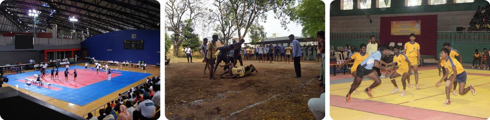
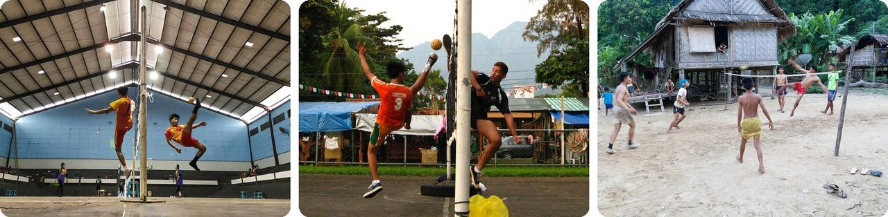
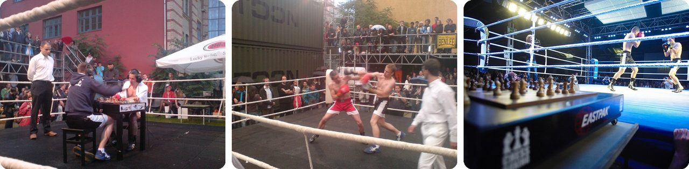
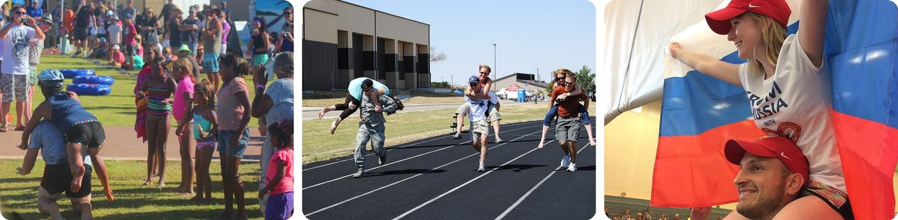
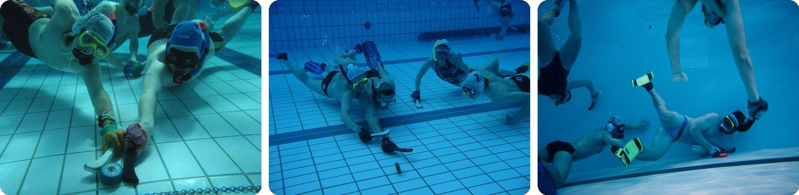
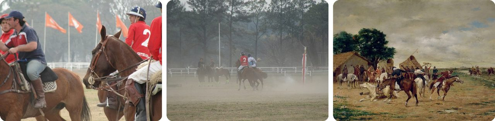
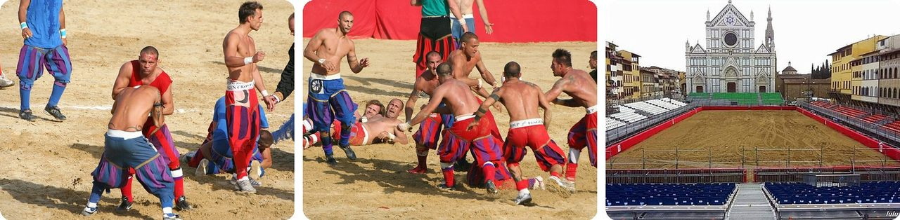
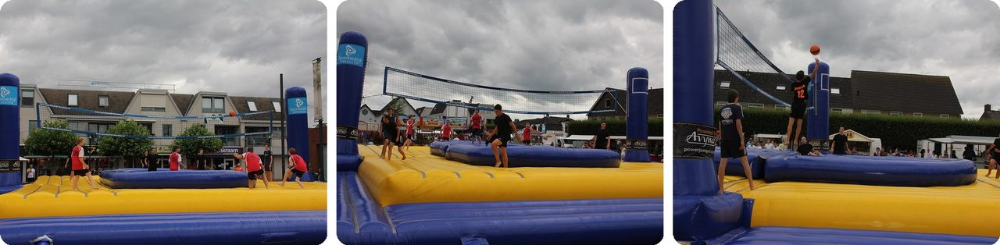
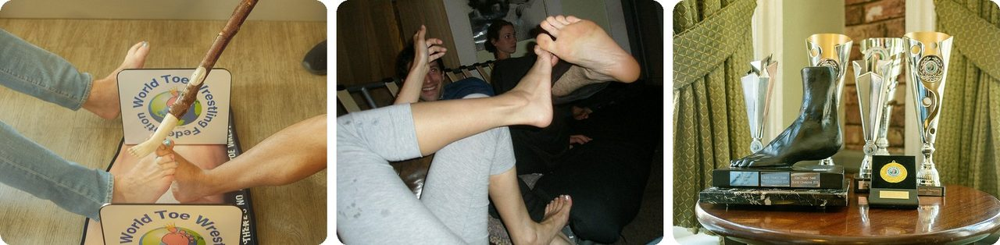
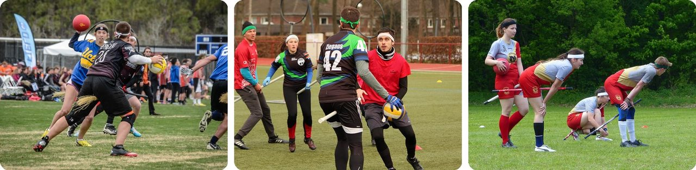

🌍 톱 10 세계의 별난 스포츠
2026년 11월 3일
1. 🇮🇳 카바디 공격수는 숨 한 번에 "카바디"를 외쳐야 해요

카바디는 인도에서 온 운동이에요. 일곱 명씩 두 팀이 코트에서 맞붙어요. 공격수 한 명이 상대 팀 진영으로 달려 들어가 수비수를 최대한 많이 건드린 다음, 붙잡히지 않고 자기 진영으로 돌아와야 해요.그런데 여기서 반전이 있어요. 공격수는 그동안 계속 "카바디, 카바디, 카바디"를 외쳐요. 이 외침은 공격 전체를 숨 한 번에 해내고 있다는 걸 심판에게 보여 주는 거예요. 외치기를 멈추면 상대 팀이 1점을 얻어요.
한 번의 공격은 보통 길어야 30초예요. 건드린 수비수 한 명마다 공격 팀이 1점을 얻지만, 수비수들이 먼저 공격수를 눌러 버리면 점수는 수비 팀 차지예요.
쉽게 말해, 숨을 들이마시면 안 되는 술래잡기예요.
2. 🇲🇾 세팍타크로는 손을 못 쓰는 배구예요

세팍타크로는 배드민턴 코트처럼 생긴 코트 가운데에 네트를 치고 해요. 두 명에서 네 명으로 이뤄진 팀이 발, 무릎, 어깨, 가슴, 머리만 써서 공을 넘겨야 해요.이름은 두 나라가 합의해서 지었어요. "세팍"은 말레이어로 '차다', "타크로"는 태국어로 '등나무로 엮은 공'이라는 뜻이에요. 1960년 쿠알라룸푸르에서 말레이시아와 태국 관계자들이 이 이름으로 정했고, 지금은 말레이시아의 국민 스포츠로 여겨져요.
공은 속이 비어 있고 구멍 12개가 나게 엮여 있으며, 아주 가벼워요. 남자 경기용 공은 170~180그램으로, 사과 하나 정도 무게예요. 그래서 발로 차면 네트 위로 높이 띄울 수 있어요.
축구 선수들이 하는 배구라고 보면 돼요.
3. 🇩🇪 체스복싱은 때리고, 생각하고, 또 때려요

체스복싱에서는 두 선수가 번갈아 가며 겨뤄요. 3분 동안 빠른 체스, 3분 동안 복싱, 그리고 다시 체스예요. 한 경기는 최대 11라운드로, 체스 여섯 번과 복싱 다섯 번이에요. 그리고 처음부터 끝까지 같은 체스판을 이어서 둬요.체크메이트든 녹아웃이든, 먼저 해내는 쪽이 이겨요. 체스 라운드마다 탁자, 체스판, 의자가 놓인 받침대가 천장에서 링 안으로 내려와요.
이 아이디어는 1992년 프랑스 만화가 엔키 빌랄의 만화에서 나왔어요. 네덜란드 예술가 이페 루빙이 이걸 진짜 스포츠로 만들었고, 첫 대회는 2003년 베를린에서 열렸어요.
주먹다짐 도중에 수학 시험을 보는 거라고 생각해 보세요.
4. 🇫🇮 아내 업고 달리기에서는 짝꿍이 거꾸로 매달려요

아내 업고 달리기는 1992년 핀란드의 작은 마을 손카야르비에서 시작됐어요. 한 사람이 팀원을 업고 장애물 코스를 최대한 빨리 달려요. 대부분 남자가 여자를 업지만, 대부분의 대회에는 성별이나 결혼에 관한 규칙이 없어요.등에 업어도 되고 한쪽 어깨에 둘러메도 돼요. 가장 희한한 자세는 "에스토니아식"이에요. 짝꿍이 달리는 사람의 등에 거꾸로 매달려서, 두 다리를 달리는 사람의 어깨와 목에 걸어요.
손카야르비에서 열리는 세계선수권 코스는 253.5미터로, 축구장 두 개 반 정도 길이예요. 업히는 사람은 몸무게가 최소 49kg(108파운드)이어야 해요. 그보다 가벼우면 무거운 배낭을 메서 모자란 무게를 채워요.
규칙집이 있는 업기 경주예요.
5. 🏴 수중 하키는 수영장 바닥에서 해요

선수들은 잠수 마스크, 스노클, 오리발을 끼고, 짧은 스틱으로 수영장 바닥을 따라 퍽을 밀어 상대 팀 골에 넣어요. 산소통은 쓸 수 없어서, 물속으로 내려갈 때마다 모두 숨을 참아야 해요.퍽은 납으로 만들어져 무게가 1.3~1.5kg이에요. 큰 물병 하나쯤 되는 무게라서 수영장 바닥에 착 붙어 있어요. 2023년 연구에 따르면, 선수들은 퍽을 가지고 있을 때 한 번에 약 12초 동안 물속에 있다가 숨 쉬러 올라와요.
1954년 영국 잉글랜드 포츠머스에서 앨런 블레이크가 만들었어요. 바다가 너무 차가운 겨울에도 다이빙 클럽 회원들이 할 일이 있도록요. 그는 이 운동을 옥토푸시(Octopush)라고 불렀는데, 한 팀이 여덟 명이고 스틱 이름이 "푸셔(pusher)"였기 때문이에요.
다시 말해, 계속 숨 쉬러 올라가야 하는 하키예요.
6. 🇦🇷 아르헨티나의 국민 스포츠 '파토'는 원래 살아 있는 오리로 했어요

"파토(pato)"는 스페인어로 '오리'예요. 1610년부터 기록이 남아 있는 초기 경기에서는, 말을 탄 사람들이 바구니에 든 살아 있는 오리를 서로 빼앗았어요. 경기장은 이웃한 두 목장 사이 전체에 걸쳐 있기도 했고, 오리를 먼저 자기 목장 집까지 가져가는 팀이 이겼어요.경기가 너무 거칠어서 몇 번이고 금지됐어요. 말에 밟히는 사람도 있었고, 경기 도중 싸움이 벌어지기도 했어요.
1930년대에 한 목장 주인이 현대식 규칙을 만들었고, 오리는 손잡이 여섯 개가 달린 가죽 공으로 바뀌었어요. 네 명씩 한 팀이 되어, 높이 2.4미터 기둥 꼭대기에 세로로 달린 고리에 공을 던져 넣어요. 공을 든 사람은 팔을 쭉 뻗고 달려야 해서, 상대가 공을 빼앗을 기회가 생겨요. 1953년 아르헨티나는 파토를 국민 스포츠로 정했어요.
말 타고 하는 농구라고 생각해 보세요.
7. 🇮🇹 칼초 스토리코는 레슬링까지 허용되는 피렌체의 옛날 축구예요

매년 6월, 이탈리아 피렌체의 네 지역 팀이 산타 크로체 광장에서 경기를 해요. 이 넓은 광장에 모래를 깔아 경기장으로 만들어요. 한 팀은 27명이고, 선수 교체는 안 돼요. 다친 선수가 생겨도 마찬가지예요.목표는 반대편 끝의 그물에 공을 넣는 건데, 방법은 거의 상관없어요. 태클, 레슬링, 심지어 주먹질도 허용돼요. 머리를 차거나 기습적으로 때리는 건 금지이고, 두 사람이 한 사람을 같이 공격해서도 안 돼요.
경기를 시작할 때와 골이 들어갈 때마다 작은 대포를 쏴요. 1530년 2월 17일 유명한 경기에서는, 황제의 군대가 도시를 둘러싸고 있는데도 피렌체 사람들이 경기를 했어요. 하나도 겁나지 않는다는 걸 보여 주려고요.
쉽게 말해, 축구, 럭비, 레슬링을 한꺼번에 하는 거예요.
8. 🤸 보사볼은 트램펄린이 달린 에어바운스 위에서 하는 배구예요

보사볼은 공기를 넣은 코트에서 하는데, 네트 양쪽에 트램펄린이 하나씩 있어요. 한 팀은 네 명이고, 그중 한 명이 트램펄린에서 높이 튀어 올라 상대편으로 공을 내리꽂아요.배구처럼 손으로 쳐도 되고, 축구처럼 발, 가슴, 머리로 쳐도 돼요. 한 팀은 최대 다섯 번까지 공을 건드릴 수 있고, 그중 한 번은 꼭 축구식으로 건드려야 해요.
축구식으로 치면 점수가 더 높아요. 발이나 머리로 친 공이 상대 트램펄린에 떨어지면 5점인데, 평범한 배구식으로 쳐서 상대 코트에 떨어지면 1점뿐이에요. 필립 에이크만스가 2004년에 이 운동을 생각해 냈고, 브라질 음악 장르인 보사노바에서 이름을 따왔어요.
에어바운스 위에서 배구를 한다고 상상해 보세요.
9. 🏴 발가락 레슬링은 맨발로 하는 팔씨름이에요

두 선수가 발가락을 걸고, 서로 상대의 발을 "토디움(toedium)"이라는 작은 받침대 옆면까지 밀어붙이려고 해요. 토디움은 "toe(발가락)"와 "stadium(경기장)"을 합친 말이에요. 팔씨름이랑 똑같은데, 발로 하는 거예요. 라운드마다 발을 바꿔요. 오른발, 왼발, 필요하면 다시 오른발이에요.이 운동은 1974년 잉글랜드 스태퍼드셔의 한 술집에서 시작됐어요. 월드컵에 질려 버린 손님들이, 영국이 이길 수 있는 스포츠를 원했대요. 그런데 바로 다음 해에 캐나다 사람이 우승했어요.
경기 전에는 심판이 발에 사마귀나 감염이 없는지 검사해요. 최고의 챔피언 앨런 "내스티" 내시는 최소 14번 우승했고, 그동안 발가락도 최소 네 개나 부러졌어요.
발로 하는 엄지 씨름이에요.
10. 🇺🇸 쿼드볼은 다리 사이에 파이프를 끼고 하는 퀴디치예요

쿼드볼은 해리 포터 책에 나오는 하늘을 나는 스포츠를 따라 한 "머글 퀴디치"로 시작했어요. 지금의 경기로 자라난 버전은 2005년 미국 미들베리 칼리지에서 만들어졌어요. 선수는 모두 경기 내내 다리 사이에 막대를 끼고 있어야 해요. 보통 길이 1미터쯤 되는 플라스틱 파이프로, 빗자루인 셈이에요.체이서는 바람을 살짝 뺀 배구공을 세 개의 고리 중 하나에 던져 넣으면 10점을 얻어요. 비터는 피구공을 던져요. 맞으면 "빗자루"에서 내려서 자기 팀 고리까지 달려가 손을 대고 와야 해요.
날아다니는 작은 황금 공을 쫓을 수는 없으니까, 20분이 지나면 노란 옷을 입은 심판이 경기장으로 뛰어 들어와요. 반바지 뒤에는 테니스공이 든 긴 천 주머니가 매달려 있어요. 이 "깃발"을 잡으면 팀이 30점을 얻어요. 이 스포츠는 2022년에 이름을 쿼드볼로 바꿨어요.
다시 말해, 가짜 빗자루를 타고 술래잡기, 피구, 핸드볼을 한꺼번에 하는 거예요.
재미있는 사실
체스복싱이 나오기 훨씬 전에, 암호 해독가 앨런 튜링은 몸을 움직이는 체스를 직접 만들었어요. "집 한 바퀴 체스"에서는 한 사람이 수를 두고 집 주위를 한 바퀴 뛰어요. 그 사람이 돌아오기 전에 다른 사람이 자기 수를 둬야 해요. 체스에는 이런 이상한 친척이 아주 많아요. 입체 3차원 판에서 두는 것도 있고, 말이 더 많은 것도 있어요. 별난 체스 변형 게임은 다음에 탐험해 볼 멋진 주제가 될 거예요.
사진 출처 (Wikimedia Commons)
- #1: A Kabaddi match at 2006 Asian Games.jpg by Doha 2006, CC BY 2.0
- #1: Kabaddi match.jpg by Sumathiraju, CC BY-SA 4.0
- #1: Kabaddi Tournament, Ramakrishna Mission, Coimbatore (1) (flickr) by Belur Math, Howrah, Public domain
- #2: Akrobatik sang ahli.jpg by Moh. Aripin, CC BY-SA 4.0
- #2: Sepak Takraw (3828519859) (cropped).jpg by dbgg1979 from Cebu City, Philippines, CC BY 2.0
- #2: Sepak Takraw, Laos(1).jpg by Ekrem Canli, CC BY-SA 4.0
- #3: Chess Boxing 2007 (1).jpg by Sascha Pohflepp, CC BY 2.0
- #3: Chess Boxing 2007 (2).jpg by Sascha Pohflepp, CC BY 2.0
- #3: Schachboxen1.jpg by WCBO, CC BY 3.0 de
- #4: Wife Carrying (flickr) by shingleback, CC BY 2.0
- #4: Malmstrom wife carry.JPG by U.S. Air Force photo by Cortney Paxton, Public domain
- #4: Awards ceremony of The Wife Carrying World Championships.jpg by Sagaldg333, CC BY-SA 4.0
- #5: OctopushTwoPlayers28092009.JPG by DavidUnderwater, CC BY-SA 3.0
- #5: Onderwaterhockey.jpg by Wouss at Dutch Wikipedia, CC BY-SA 3.0
- #5: Coast Guard Academy Underwater Hockey Team (flickr) by US Coast Guard Academy, Public domain
- #6: Pato Jugadores (229377757).jpeg by Ontzia Fotógrafo Ontzia Fotógrafo, CC BY 3.0
- #6: Jugada Pato (230201889).jpeg by Ontzia Fotógrafo Ontzia Fotógrafo, CC BY 3.0
- #6: El juego del pato - Ángel della Valle.jpg by Ángel della Valle, Public domain
- #7: Calcio Storico partita.JPG by Lorenzo Noccioli, CC BY-SA 3.0
- #7: Calcio Storico partita 1.JPG by Lorenzo Noccioli, CC BY-SA 3.0
- #7: Arena calcio storico stefano ricci 2015.jpg by Silaip, CC BY-SA 4.0
- #8: Bossaball 2014 (14696715294).jpg by Volleybal Isala, CC BY 2.0
- #8: Bossaball 2014 (14696720874).jpg by Volleybal Isala, CC BY 2.0
- #8: Bossaball 2014 (14718979913).jpg by Volleybal Isala, CC BY 2.0
- #9: Toedium.jpg by BigToeWrestler, CC BY-SA 4.0
- #9: toe wrestling (flickr) by D.C.Atty, CC BY 2.0
- #9: Toe Wrestling Trophies.jpg by BigToeWrestler, CC BY-SA 4.0
- #10: Muggle Quidditch.jpg by BenHollandPhotography, CC BY-SA 4.0
- #10: German Quidditch Cup 2016 in Darmstadt.JPG by Nickvk4, CC BY-SA 4.0
- #10: Quidditch players on brooms.jpg by Radiat, CC BY-SA 4.0


_(cropped).jpg){kind=link}
.jpg){kind=link}
.jpg){kind=link}
.jpg){kind=link}


.jpeg){kind=link}
.jpeg){kind=link}


.jpg){kind=link}
.jpg){kind=link}
.jpg){kind=link}